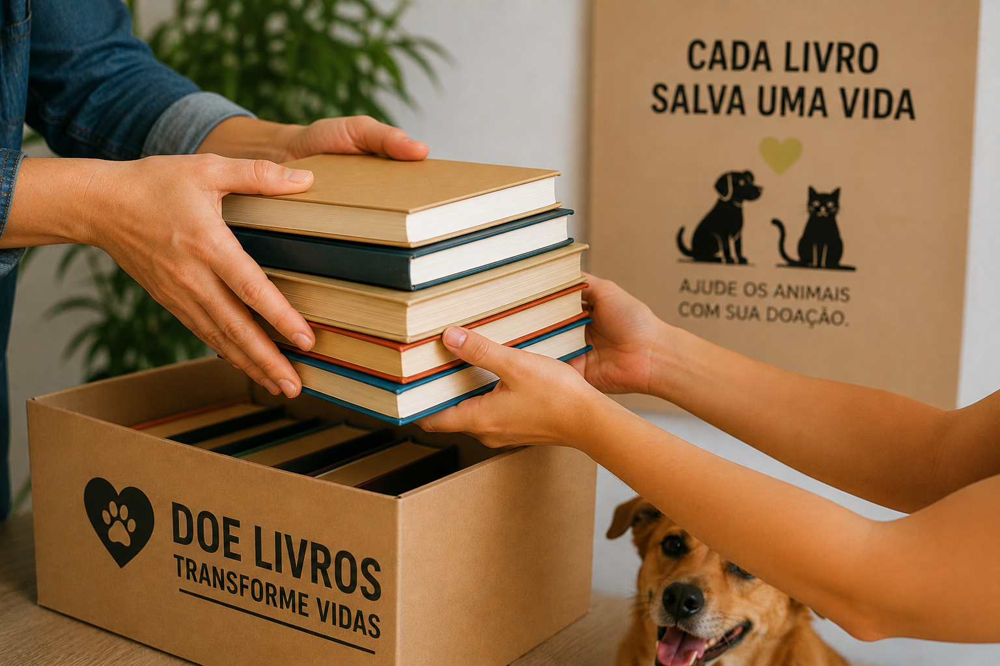
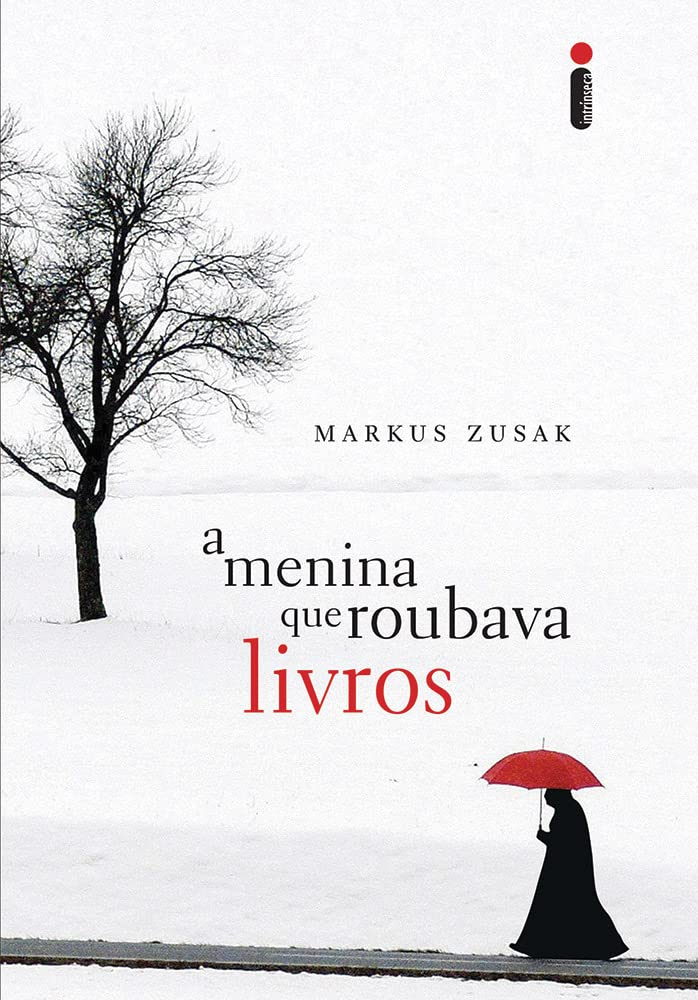
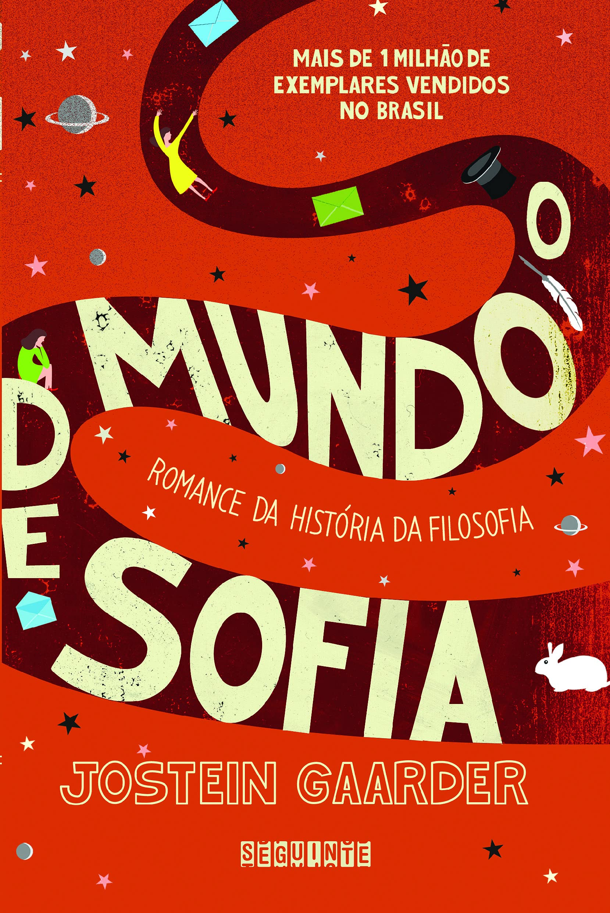
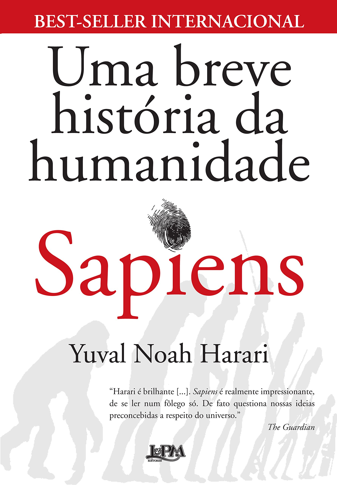
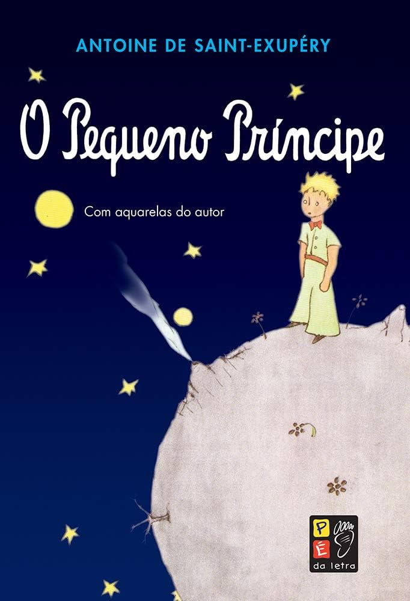

Transformamos livros doados em recursos para resgatar, tratar e cuidar de cães e gatos em situação de vulnerabilidade. Cada livro doado pode ajudar a salvar uma vida.
O Instituto Aumigo de Livros foi criado em Vitória, no Espírito Santo, unindo duas causas importantes: o incentivo à leitura e a proteção animal. A ideia surgiu em 2018, quando a fundadora Magali Gláucia percebeu o impacto do abandono animal e decidiu transformar isso em uma ação solidária.
Ela começou vendendo livros próprios para arrecadar dinheiro para uma ONG de proteção animal. O projeto cresceu rapidamente com ajuda de alunos, voluntários e pessoas da comunidade, até se tornar oficialmente um instituto em 2020.
O projeto já arrecadou mais de meio milhão de reais para a causa animal e ajudou diretamente centenas de animais ao longo dos anos. Um livro pode se transformar em esperança e cuidado para muitos animais resgatados.

O ciclo é simples: você doa um livro que não usa mais, o instituto organiza e vende, e o recurso vai direto para o resgate e tratamento de animais.
Livros usados em bom estado são entregues em nossos pontos de coleta parceiros.
Os livros são vendidos em feiras, eventos e pelas redes sociais.
100% do valor vai para resgates, vacinas, castrações, ração e lares temporários.
Cada livro adotado transforma uma vida.




Cães e gatos em situação de rua recebem abrigo seguro, alimentação e carinho enquanto aguardam adoção responsável.
Cada livro vendido financia consultas, cirurgias, vacinas, medicamentos e castrações para quem mais precisa.
Realizamos campanhas de conscientização e conectamos animais recuperados a famílias que os acolhem com amor.
Seus livros parados têm o poder de transformar a realidade de animais vulneráveis. Leve em um dos nossos pontos de coleta ou entre em contato para combinarmos a retirada.
Pontos de coleta